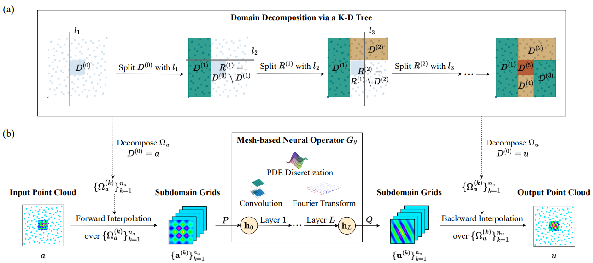
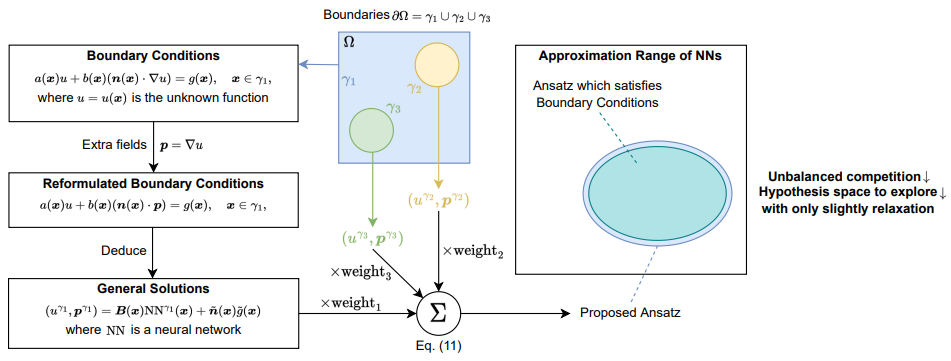
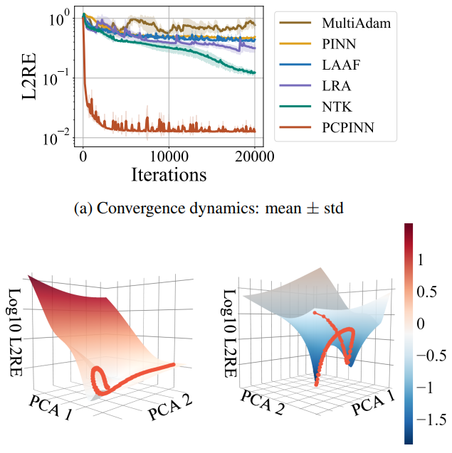
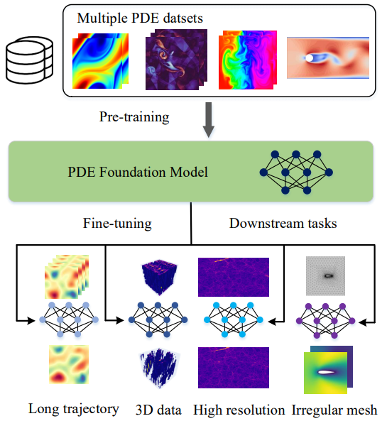
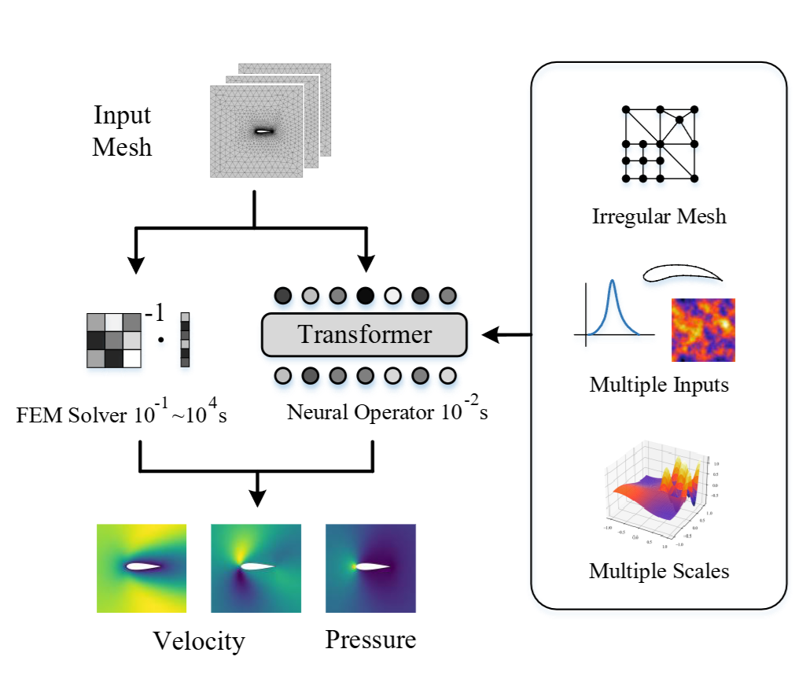
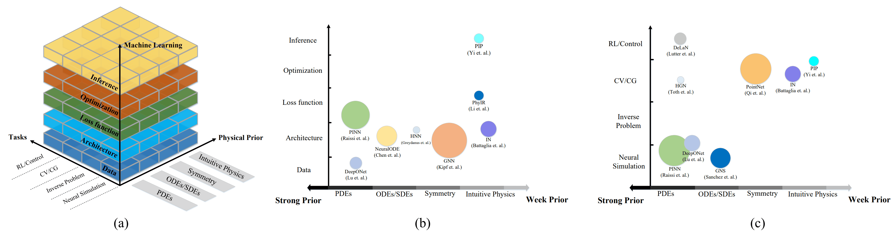

Songming Liu (刘松铭)
I'm Songming Liu, a Ph.D. student in Machine Learning at Tsinghua University, advised by Prof. Jun Zhu and Prof. Hang Su since 2023.
My research focuses on multi-modal foundation models for robotics.
Previously, I worked on Machine Learning for Partial Differential Equations (PDEs), which was also the topic of my undergraduate thesis. I graduated with a Bachelor's degree (GPA: 3.99/4.00; Rank: 1/215) from Department of Computer Science and Technology, Tsinghua University in 2023, honored as an Outstanding Graduate and recipient of the Outstanding Thesis Award.
Email /
Google Scholar /
Twitter /
Github
Your browser does not support the video tag.
RDT-1B: a Diffusion Foundation Model for Bimanual Manipulation
Songming Liu*
Lingxuan Wu* ,
Bangguo Li,
Hengkai Tan ,
Huayu Chen ,
Zhengyi Wang ,
Ke Xu,
Hang Su ,
Jun Zhu
ICLR , 2025
Project Page
/
arXiv
/
Code
/
Model
/
Data
/

NUNO: A General Framework for Learning Parametric PDEs with Non-Uniform Data
Songming Liu , Zhongkai Hao , Chengyang Ying , Hang Su , Ze Cheng,
Jun Zhu
ICML , 2023
arXiv /
Github

A Unified Hard-Constraint Framework for Solving Geometrically Complex PDEs
Songming Liu , Zhongkai Hao , Chengyang Ying , Hang Su ,
Jun Zhu , Ze Cheng
NeurIPS , 2022
arXiv /
Github

Preconditioning for Physics-Informed Neural Networks
Songming Liu , Chang Su, Jiachen Yao , Zhongkai Hao , Hang Su ,
Youjia Wu , Jun Zhu
arXiv
arXiv

DPOT: Auto-Regressive Denoising Operator Transformer for Large-Scale PDE Pre-Training
Zhongkai Hao , Chang Su, Songming Liu , Julius Berner , Chengyang Ying , Hang Su , Anima Anandkumar ,
Jian Song,
Jun Zhu
ICML , 2024
arXiv /
Github

GNOT: A General Neural Operator Transformer for Operator Learning
Zhongkai Hao , Zhengyi Wang , Hang Su , Chengyang Ying ,
Yinpeng Dong ,
Songming Liu , Ze Cheng, Jian Song,
Jun Zhu
ICML , 2023
arXiv /
Github

Physics-informed machine learning: A survey on problems, methods and applications
Zhongkai Hao , Songming Liu , Yichi Zhang , Chengyang Ying , Yao Feng , Hang Su ,
Jun Zhu
arXiv
arXiv
Selected Honors
Outstanding Graduate, Tsinghua University, 2023
Outstanding Thesis Award, Tsinghua University, 2023
Special Scholarship for Undergraduates (本科生特等奖学金), Tsinghua University, 2022
Finalist in the Mathematical Contest in Modeling (MCM), 2021
Gold Medal in the Chinese Chemistry Olympiad (CChO), 2017